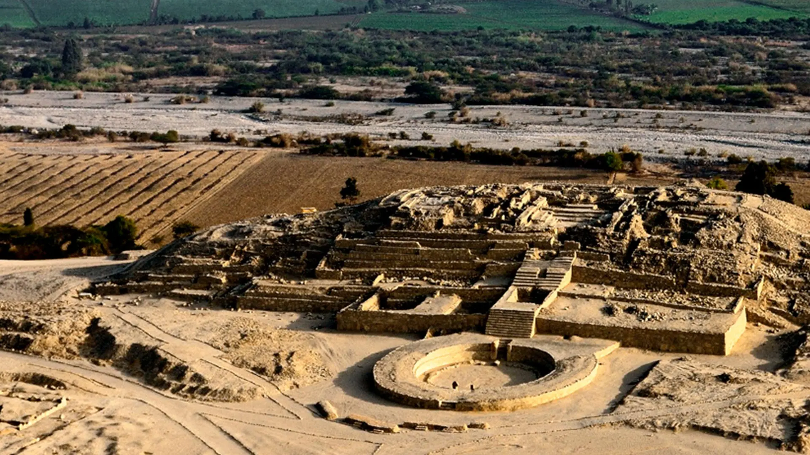

Ciudad Sagrada de Caral

Descripción:
Vista panorámica de Caral, la ciudad más antigua de América, con pirámides monumentales y espacios ceremoniales.
Vista panorámica de Caral, la ciudad más antigua de América, con pirámides monumentales y espacios ceremoniales.